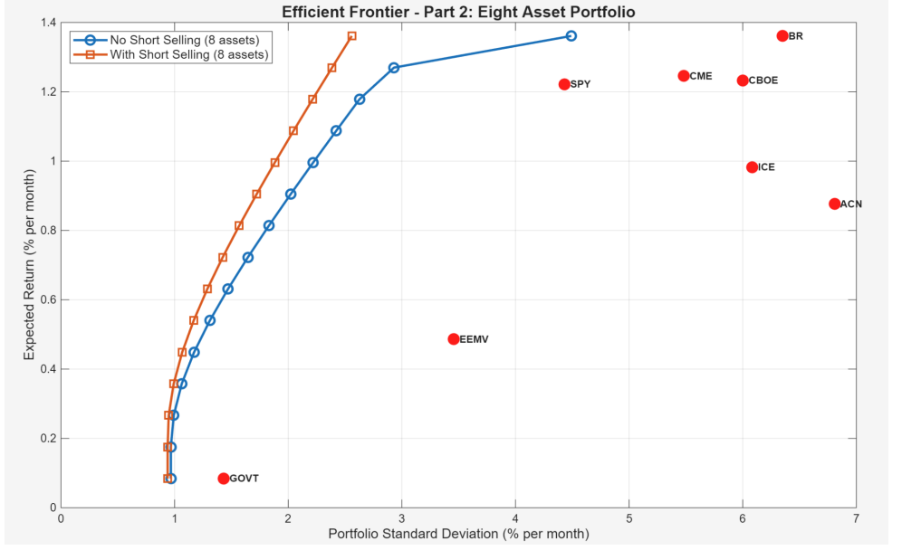
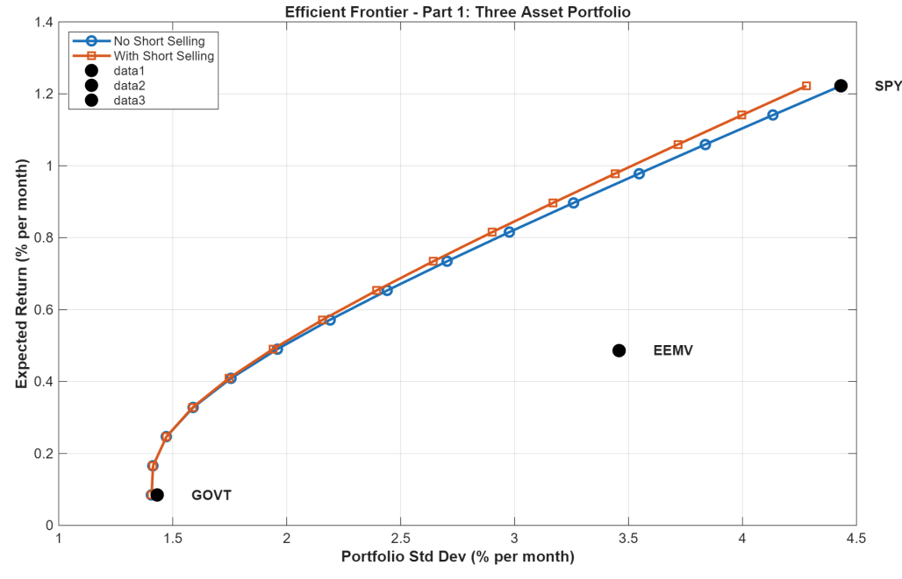

Mean-Variance Portfolio Optimization

Overview
Built mean-variance (Markowitz) optimization models in MATLAB to find the lowest-risk portfolio for a range of target returns. Compared a three-asset portfolio of an S&P 500 ETF, a US Treasury bond ETF, and an emerging markets ETF against an eight-asset portfolio that adds five financial-sector stocks, each with and without short selling, using almost ten years of monthly price data.
What I did
- Collected 118 monthly adjusted closing prices (December 2015 to October 2025) from Yahoo Finance for SPY, GOVT, EEMV, CME, BR, CBOE, ICE, and ACN.
- Computed monthly returns, geometric expected returns, standard deviations, and the covariance matrix for each asset.
- Formulated the Markowitz model as a quadratic program that minimizes portfolio variance subject to a target return and fully invested weights, and solved it with MATLAB's quadprog across 15 target returns.
- Generated efficient frontiers for both portfolios, with and without short selling.
- Found that the eight-asset frontier strictly dominates the three-asset one. Its lowest-risk portfolio has a 0.97% monthly standard deviation, versus 1.41% with three assets.
- Showed that short selling barely helps with three assets but matters with eight. At the highest target return (1.36% per month), it cut portfolio risk from 4.49% to 2.56% standard deviation.
Results

Three-asset efficient frontier. Diversification comes mainly from pairing the bond ETF (GOVT) with the S&P 500 ETF (SPY), and the two frontiers nearly overlap, so short selling adds little.
With eight assets (top image), BR, CME, and CBOE become the main return drivers while GOVT stays the low-risk stabilizer. The wider set of assets gives more room to diversify and hedge, which is why the short-selling frontier pulls clearly to the left.
Tools
MATLAB (Optimization Toolbox, quadprog), Excel, Yahoo Finance data, mean-variance optimization